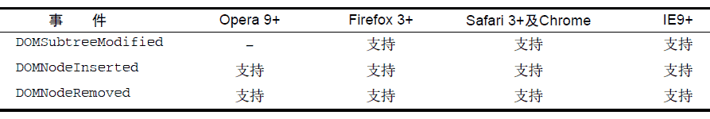

13.4.6 变动事件
DOM2 级的变动（mutation）事件能在DOM 中的某一部分发生变化时给出提示。变动事件是为XML或HTML DOM设计的，并不特定于某种语言。DOM2 级定义了如下变动事件。
-
DOMSubtreeModified：在DOM 结构中发生任何变化时触发。这个事件在其他任何事件触发后都会触发。
-
DOMNodeInserted：在一个节点作为子节点被插入到另一个节点中时触发。
-
DOMNodeRemoved：在节点从其父节点中被移除时触发。
-
DOMNodeInsertedIntoDocument：在一个节点被直接插入文档或通过子树间接插入文档之后触发。这个事件在DOMNodeInserted 之后触发。
-
DOMNodeRemovedFromDocument：在一个节点被直接从文档中移除或通过子树间接从文档中移除之前触发。这个事件在DOMNodeRemoved 之后触发。
-
DOMAttrModified：在特性被修改之后触发。
-
DOMCharacterDataModified：在文本节点的值发生变化时触发。
使用下列代码可以检测出浏览器是否支持变动事件：
var isSupported = document.implementation.hasFeature("MutationEvents", "2.0");
IE8 及更早版本不支持任何变动事件。下表列出了不同浏览器对不同变动事件的支持情况。

由于DOM3 级事件模块作废了很多变动事件，所以本节只介绍那些将来仍然会得到支持的事件。
1. 删除节点
在使用removeChild()或replaceChild()从DOM中删除节点时，首先会触发DOMNodeRemoved事件。这个事件的目标（event.target）是被删除的节点，而event.relatedNode 属性中包含着对目标节点父节点的引用。在这个事件触发时，节点尚未从其父节点删除，因此其parentNode 属性仍然指向父节点（与event.relatedNode 相同）。这个事件会冒泡，因而可以在DOM 的任何层次上面处理它。
如果被移除的节点包含子节点，那么在其所有子节点以及这个被移除的节点上会相继触发DOMNodeRemovedFromDocument 事件。但这个事件不会冒泡，所以只有直接指定给其中一个子节点的事件处理程序才会被调用。这个事件的目标是相应的子节点或者那个被移除的节点，除此之外event对象中不包含其他信息。
紧随其后触发的是DOMSubtreeModified 事件。这个事件的目标是被移除节点的父节点；此时的event 对象也不会提供与事件相关的其他信息。
为了理解上述事件的触发过程，下面我们就以一个简单的HTML 页面为例。
<! DOCTYPE html>
<html>
<head>
<title>Node Removal Events Example</title>
</head>
<body>
<ul id="myList">
<li>Item 1</li>
<li>Item 2</li>
<li>Item 3</li>
</ul>
</body>
</html>
在这个例子中，我们假设要移除<ul>元素。此时，就会依次触发以下事件。
(1) 在<ul>元素上触发DOMNodeRemoved 事件。relatedNode 属性等于document.body。
(2) 在<ul>元素上触发DOMNodeRemovedFromDocument 事件。
(3) 在身为<ul>元素子节点的每个<li>元素及文本节点上触发DOMNodeRemovedFromDocument事件。
(4) 在document.body 上触发DOMSubtreeModified 事件，因为<ul>元素是document.body的直接子元素。
运行下列代码可以验证以上事件发生的顺序。
EventUtil.addHandler(window, "load",
function(event) {
var list = document.getElementById("myList");
EventUtil.addHandler(document, "DOMSubtreeModified",
function(event) {
alert(event.type);
alert(event.target);
});
EventUtil.addHandler(document, "DOMNodeRemoved",
function(event) {
alert(event.type);
alert(event.target);
alert(event.relatedNode);
});
EventUtil.addHandler(list.firstChild, "DOMNodeRemovedFromDocument",
function(event) {
alert(event.type);
alert(event.target);
});
list.parentNode.removeChild(list);
});
以上代码为document 添加了针对DOMSubtreeModified 和DOMNodeRemoved 事件的处理程序，以便在页面上处理这些事件。由于DOMNodeRemovedFromDocument 不会冒泡，所以我们将针对它的事件处理程序直接添加给了<ul>元素的第一个子节点（在兼容DOM 的浏览器中是一个文本节点）。在设置了以上事件处理程序后，代码从文档中移除了<ul>元素。
2. 插入节点
在使用appendChild()、replaceChild()或insertBefore()向DOM中插入节点时，首先会触发DOMNodeInserted 事件。这个事件的目标是被插入的节点，而event.relatedNode 属性中包含一个对父节点的引用。在这个事件触发时，节点已经被插入到了新的父节点中。这个事件是冒泡的，因此可以在DOM 的各个层次上处理它。
紧接着，会在新插入的节点上面触发DOMNodeInsertedIntoDocument 事件。这个事件不冒泡，因此必须在插入节点之前为它添加这个事件处理程序。这个事件的目标是被插入的节点，除此之外event 对象中不包含其他信息。
最后一个触发的事件是DOMSubtreeModified，触发于新插入节点的父节点。
我们仍以前面的HTML 文档为例，可以通过下列JavaScript 代码来验证上述事件的触发顺序。
EventUtil.addHandler(window, "load",
function(event) {
var list = document.getElementById("myList");
var item = document.createElement("li");
item.appendChild(document.createTextNode("Item 4"));
EventUtil.addHandler(document, "DOMSubtreeModified",
function(event) {
alert(event.type);
alert(event.target);
});
EventUtil.addHandler(document, "DOMNodeInserted",
function(event) {
alert(event.type);
alert(event.target);
alert(event.relatedNode);
});
EventUtil.addHandler(item, "DOMNodeInsertedIntoDocument",
function(event) {
alert(event.type);
alert(event.target);
});
list.appendChild(item);
});
以上代码首先创建了一个包含文本"Item 4"的新<li>元素。由于DOMSubtreeModified 和DOMNodeInserted 事件是冒泡的，所以把它们的事件处理程序添加到了文档中。在将列表项插入到其父节点之前，先将DOMNodeInsertedIntoDocument 事件的事件处理程序添加给它。最后一步就是使用appendChild()来添加这个列表项；此时，事件开始依次被触发。首先是在新<li>元素项上触发DOMNodeInserted 事件，其relatedNode 是<ul>元素。然后是触发新<li>元素上的DOMNode-InsertedIntoDocument 事件，最后触发的是<ul>元素上的DOMSubtreeModified 事件。